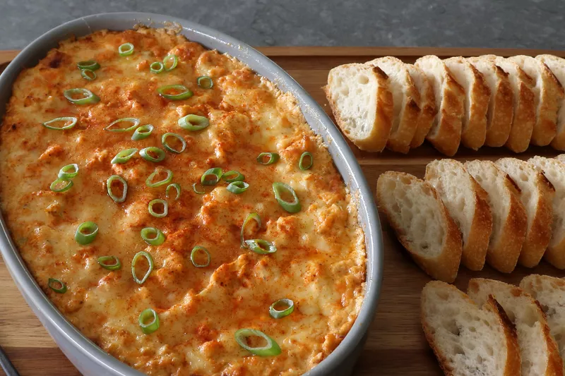

Hot Crab Dip

Description
These things are very hard to prove, or, more importantly to someone like me, disprove: But it’s with great confidence that I’m calling this “THE best hot crab dip.” It just is. In fact, this dip is so good, it even works nicely with the cheap canned crab you find next to the tuna fish and chopped clams. If a hot shellfish dip isn’t your thing, pretty much any chopped up protein will do just fine. By the way, if times are really tough, you don’t have to add anything.
My mom used to make an appetizer for parties that consisted of cream cheese smothered in cocktail sauce and topped with a handful of bay shrimp. This, surrounded by lots of saltine crackers, was always a big hit. But sometimes we couldn’t afford the shrimp, so she’d do the exact same thing without the shrimp. And it was still great. So, if crab is not a financially viable choice, you could just serve this sans seafood, and somewhere my mom would be smiling. Anyway, no matter what you use, a hot cheesy dip is always a big hit at any party, and I really do hope you give it a try soon. Enjoy!
Ingredients
- 2 (8 ounce) packages cream cheese, at room temperature
- 1/3 cup sour cream
- 1/3 cup mayonnaise
- 1/4 cup ketchup
- 2 teaspoons Worcestershire sauce
- 2 cloves garlic, minced
- 1 lemon, zested and juiced
- 2 teaspoon seadfood seasoning, such as OLD BAY® Seafood Seasoning
- 2 teaspoon paprika
- 1 teaspoon hot sauce
- 1 teaspoon freshly groud black pepper
- 1/4 teaspoon cayenne pepper, or more to taste
- 6 ounces shredded white Cheddar cheese, divided
- Salt to taste
- 1/2 cup sliced green onions
- 1 pound lump crab meat
Steps
- Preheat the oven to 450 degrees F (230 degrees C).
- Stir cream cheese, sour cream, mayonnaise, ketchup, Worcestershire sauce, garlic, lemon zest and juice, seafood seasoning, paprika, hot sauce, freshly ground black pepper, cayenne, and 4 ounces shredded Cheddar cheese together in a bowl until well combined. Season with salt.
- Add green onions and crab meat to the bowl; fold in gently with a spatula until evenly mixed.
- Transfer into a baking dish or deep pie dish. Top with remaining 2 ounces shredded Cheddar and a shake of cayenne.
- Bake in the preheated oven until dip is piping hot, about 20 minutes. Let rest 10 minutes before serving.
- Serve with more green onions and sprinkle more cayenne on top if desired.
Back